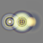
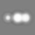
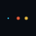
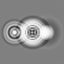
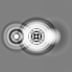
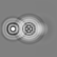

Balanced Field
Baseline unseen-vision render with the hub and ring held in balance.






- Delay mean
- 0.555
- Brightness
- 0.538
- Spectral split
- 0.048
- Structure gain
- 1.00
- Delay gain
- 1.00
- Spectral tilt
- 0.00